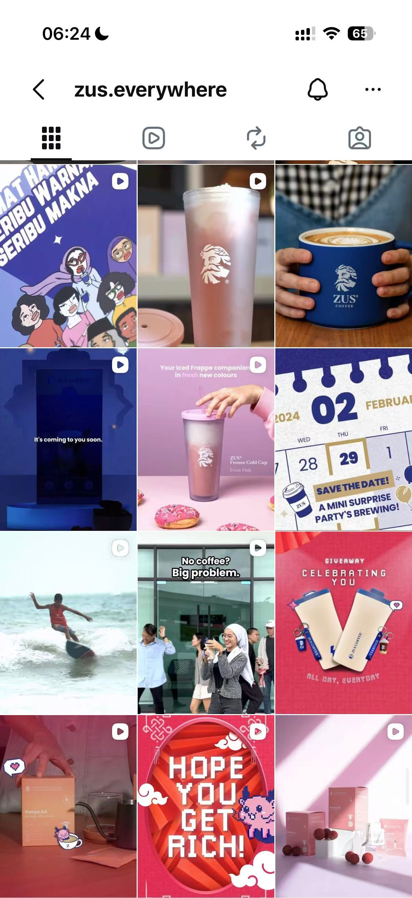
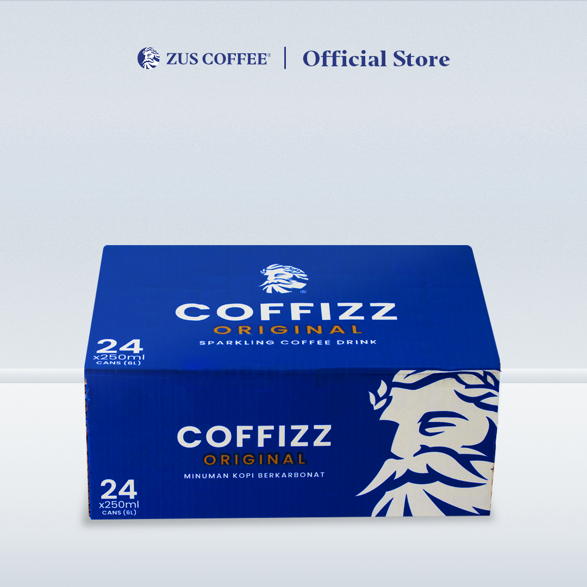

PROJECT CONSULTANT PORTFOLIO / 03
ZUS Coffee新品内容执行与渠道协同
从新品内容调研到素材准备与渠道排期，协助Instagram发布，并通过周度复盘优化后续执行。
新媒体运营实习生（业务调研方向）
工作主线
调研与选题 → 素材准备 → 渠道排期 → 内容发布 → 周度复盘 → 优化下一轮执行
01 / PROCESS
调研转为内容方向
参与新品内容前期调研，结合目标用户偏好、社媒互动反馈和竞品内容表现，提炼新品推广重点，为选题、画面和文案提供参考。
02 / PROCESS
素材准备与交付
协助完成50条Instagram内容发布，参与选题、拍摄、剪辑及英文文案制作，整理hashtag与素材，支持团队完成内容准备和发布。
03 / PROCESS
渠道与排期配合
配合产品线上首发及FamilyMart线下渠道传播，协助整理宣传素材、门店信息和发布排期，让产品信息、渠道说明和发布时间相互衔接。
04 / PROCESS
每周复盘
每周跟踪内容数据，累计输出15+次内容复盘，结合互动反馈调整后续选题和表达，将执行结果带回下一轮内容准备。
结果与复盘
协助完成50条Instagram内容发布，累计输出15+次内容复盘，协同带动账号粉丝增长1.1w+。粉丝增长为账号整体结果，不等同于个人独立贡献或销售增长。
相关材料
保留参考站已有材料；图片用于展示相应场景，品牌资料不代表全部由本人独立制作。流程表述按本版简历整理，未展示客户内部明细。


与项目顾问岗的关联
从业务信息中明确任务，配合准备材料与执行，记录反馈并跟进下一步。保留项目原有业务背景，体现可迁移的需求理解、沟通协同与问题跟进能力。